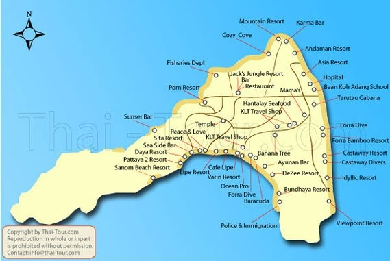

แผนที่เกาะหลีเป๊ะ
สถานที่ตั้ง
♦ ตั้งอยู่ทางทิศตะวันตกของหมู่เกาะตะรุเตา บ้านเกาะหลีเป๊ะ ตำบลเกาะสาหร่าย อำเภอเมือง
การเดินทางไปเกาะหลีเป๊ะ
♦ จากตัวเมืองจังหวัดสตูลถึงท่าเรือปากบารา : ใช้เส้นทางหลวงหมายเลข 4078 จาก
แยกฉลุง ถึง อำเภอละงู ประมาณ 37 กิโลเมตร แล้วจึงเดินทางต่อไปยัง ท่าเรือปากบาราประมาณ 9 กิโลเมตร
♦ จากท่าเรือปากบาราถึงเกาะหลีเป๊ะ : นั่ง speedboat
จากท่าเรือปากบาราถึงเกาะตะรุเตา และเกาะหลีเป๊ะ
เรือจะออกจากท่าวันละ 2 ครั้ง คือ เวลา 11 โมงเช้า และ บ่าย 2 โมง
และกลับมาจากเกาะหลีเป๊ะประมาณ 11 โมงเช้าและบ่าย 3 โมง
ใช้เวลาในการเดินทางประมาณ 3 ชั่วโมง และเสียค่าใช้จ่ายของเรือคนละ 1,000 พันบาท (ไป-กลับ)